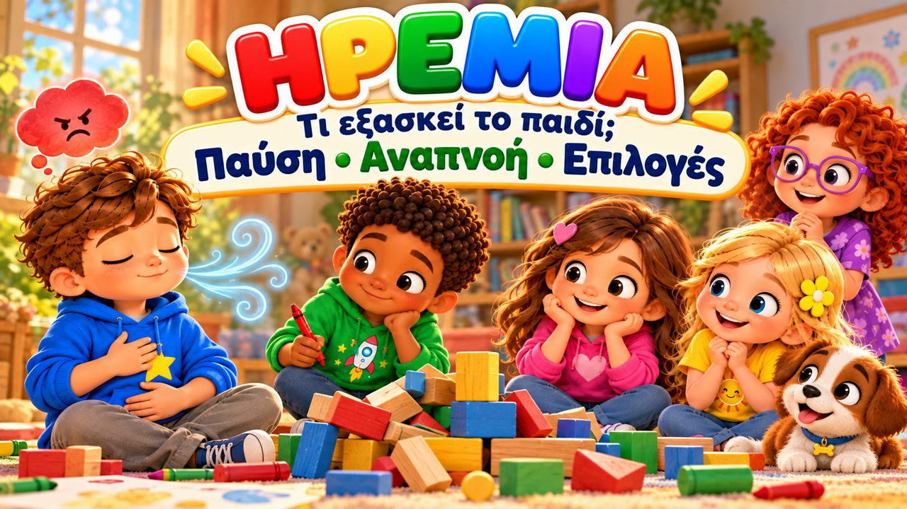
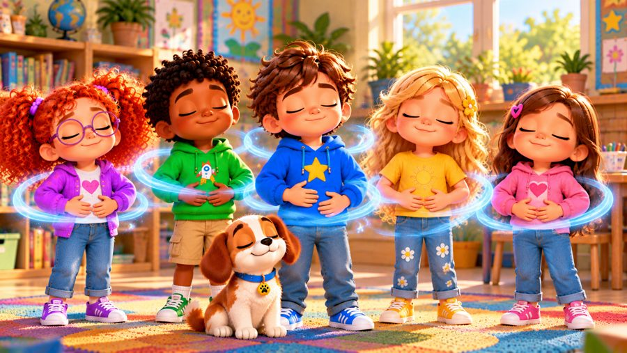
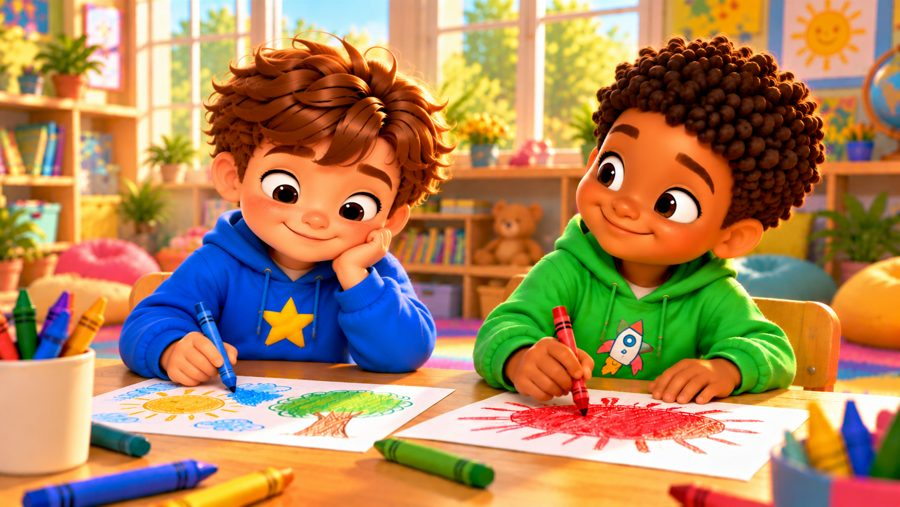
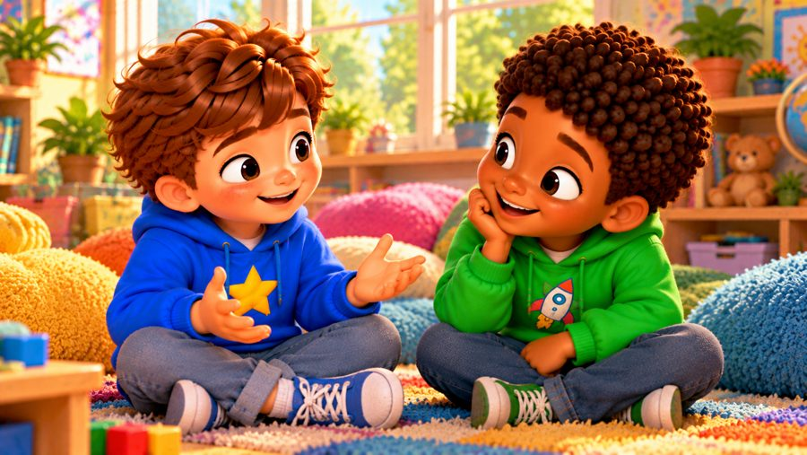

Σταματώ
Ένα τραγούδι για τον θυμό και την ηρεμία! 💚 Τραγουδήστε με τον Μαξ, τη Μία, τον Τζέι, τη Λίλη, τη Ρόζα και τον σκυλάκο Μπάντι. Ο Μαξ μαθαίνει τι να κάνει όταν θυμώνει: ΣΤΑΜΑΤΩ, ΑΝΑΠΝΕΩ, ΣΚΕΦΤΟΜΑΙ — και ΕΠΙΛΕΓΩ!
Το «Σταματώ» είναι ένα τραγούδι για παιδιά για τη διαχείριση του θυμού: όταν κάποιος ρίχνει κατά λάθος τον πύργο του Μαξ και όταν ο Τζέι κρατά τον κόκκινο μαρκαδόρο, ο Μαξ νιώθει μεγάλο θυμό — μα μαθαίνει να σταματά, να παίρνει αργή ανάσα, να ονομάζει αυτό που νιώθει και να μιλά αντί να αρπάζει. Με στίχους-καραόκε, για παιδιά 3–8 ετών και τα Εργαστήρια Δεξιοτήτων.

▶💡 Γιατί είναι σημαντικό: Διαχείριση θυμού
Ο θυμός είναι φυσιολογικό συναίσθημα — αυτό που χρειάζεται να μάθει το παιδί είναι τι να κάνει μ’ αυτόν. Μερικά απλά εργαλεία ηρεμίας (σταματώ, ανασαίνω, μετράω) το βοηθούν να μη πληγώνει τους άλλους και να νιώθει ξανά ότι ελέγχει την κατάσταση. Εξασκηθείτε μαζί στην ήρεμη ανάσα όταν όλοι είναι ήρεμοι, ώστε να είναι έτοιμη όταν έρθουν τα μεγάλα συναισθήματα.
👨👩👧 Τι μαθαίνει το παιδί
- Ότι είναι εντάξει να θυμώνει — ο θυμός δεν είναι κακός
- Να αναγνωρίζει τα σημάδια: πρόσωπο που καίει, χέρια που σφίγγουν
- Ένα απλό σχέδιο ηρεμίας: σταματώ, αναπνέω, σκέφτομαι, επιλέγω
- Να ονομάζει το συναίσθημα και να δίνει χρόνο στον εαυτό του
- Να μιλά με λόγια και να περιμένει τη σειρά του
💬 Κουβέντα μετά το τραγούδι
- Πώς νιώθει το σώμα σου όταν θυμώνεις;
- Τι σε βοηθά να ηρεμήσεις;
🏅 Κουίζ & Πτυχίο
Είδατε το τραγούδι μαζί; Τώρα διαβάστε στο παιδί κάθε ερώτηση — το παιδί δείχνει τη σωστή εικόνα. Αν απαντήσει και στις 6 ερωτήσεις, κερδίζει ένα πτυχίο για εκτύπωση!
🔒 Το όνομα χρησιμοποιείται μόνο για να φτιαχτεί το πτυχίο στη συσκευή σας. Δεν αποθηκεύουμε και δεν στέλνουμε τίποτα.
Τα κατάφερες! 🎉
Και οι 6 απαντήσεις είναι σωστές! Γράψτε το όνομα του παιδιού για να φτιαχτεί το πτυχίο.
🖨️ Δωρεάν εκτυπώσιμα
Δωρεάν για χρήση στο σπίτι και στην τάξη. Εκτυπώστε σε χαρτί Α4.
🖼️ Σκηνές από το τραγούδι






🎵 Κι άλλα τραγούδια


🎤 Στίχοι – Σταματώ
Ωχ...
Νομίζω πως θυμώνω!
Το πρόσωπό μου καίει,
τα χέρια μου σφίγγουν...
Τι μπορώ να κάνω;
Σταματώ...
Αναπνέω...
Ηρεμώ...
Μπορώ να τα καταφέρω!
Έφτιαξα έναν πύργο ψηλό,
και τον κοιτούσα χαμογελαστός.
Μα κάποιος πέρασε από κοντά...
ΜΠΑΜ!
Ο πύργος έπεσε ξαφνικά!
Ήθελα αμέσως να φωνάξω,
να πω «Γιατί;» και να θυμώσω!
Το πρόσωπό μου έγινε ζεστό...
«Είμαι θυμωμένος!»
Τώρα το ξέρω κι εγώ.
Σταμάτησα για μια στιγμή
και πήρα μια ανάσα βαθιά.
Σταματώ για μια στιγμή,
παίρνω ανάσα αργή.
Ένα... δύο... τρία...
και περιμένω λιγάκι.
Μπορεί ο θυμός να είναι δυνατός,
μα εγώ μπορώ να σκεφτώ:
Τι θα κάνω τώρα εγώ;
Όταν θυμώνω,
μπορώ να ηρεμήσω!
Παίρνω ανάσα...
και αργά θα ξεκινήσω.
Σταματώ!
Αναπνέω!
Λέω αυτό που χρειάζομαι!
Είναι εντάξει να θυμώνω,
μα διαλέγω τι θα κάνω!
Σταματώ!
Αναπνέω!
Σκέφτομαι!
Επιλέγω!
Και σιγά σιγά...
ηρεμώ!
Ήθελα τον κόκκινο μαρκαδόρο,
μα τον κρατούσε ήδη ο Τζέι.
Ένιωσα τον θυμό να μεγαλώνει:
«Τον θέλω τώρα!» σκέφτηκα.
Πήγα να τον πάρω,
μα σταμάτησα εκεί.
Πήρα μια ανάσα
και σκέφτηκα πολύ.
«Όταν τελειώσεις,
μπορώ να τον πάρω εγώ;»
Ο Τζέι χαμογέλασε:
«Φυσικά, σε λίγο!»
Περίμενα τη σειρά μου,
και όταν ήρθε η στιγμή,
πήρα τον μαρκαδόρο
και ζωγράφισα κι εγώ!
Σταματώ για μια στιγμή,
παίρνω ανάσα αργή.
Ένα... δύο... τρία...
και περιμένω λιγάκι.
Μπορεί ο θυμός να είναι δυνατός,
μα εγώ μπορώ να σκεφτώ:
Τι θα κάνω τώρα εγώ;
Όταν θυμώνω,
μπορώ να ηρεμήσω!
Παίρνω ανάσα...
και αργά θα ξεκινήσω.
Σταματώ!
Αναπνέω!
Λέω αυτό που χρειάζομαι!
Είναι εντάξει να θυμώνω,
μα διαλέγω τι θα κάνω!
Σταματώ!
Αναπνέω!
Σκέφτομαι!
Επιλέγω!
Και σιγά σιγά...
ηρεμώ!
Το πρόσωπό σου καίει;
ΣΤΑΜΑΤΑ!
Τα χέρια σου σφίγγουν;
ΑΝΑΠΝΕΥΣΕ!
Τι αισθάνεσαι;
ΘΥΜΟ!
Χρειάζεσαι λίγο χρόνο;
ΘΑ ΠΕΡΙΜΕΝΩ!
Είσαι έτοιμος να μιλήσεις;
ΘΑ ΤΟ ΠΩ ΜΕ ΛΟΓΙΑ!
Και μετά;
ΕΠΙΛΕΓΩ!
Σταματώ!
Αναπνέω!
Σκέφτομαι!
Επιλέγω!
Ο θυμός δεν είναι κακός.
Είναι ένα συναίσθημα κι αυτός.
Μα εγώ διαλέγω
τι θα κάνουν τα χέρια μου.
Εγώ διαλέγω
τι θα πω με τα λόγια μου.
Μπορώ να δώσω
λίγο χρόνο στον εαυτό μου...
μέχρι να είμαι έτοιμος.
Όταν θυμώνω,
μπορώ να ηρεμήσω!
Παίρνω ανάσα...
και αργά θα ξεκινήσω.
Σταματώ!
Αναπνέω!
Λέω αυτό που χρειάζομαι!
Είναι εντάξει να θυμώνω,
μα διαλέγω τι θα κάνω!
Σταματώ!
Αναπνέω!
Σκέφτομαι!
Επιλέγω!
Τα μεγάλα συναισθήματα
έρχονται και φεύγουν.
Τα νιώθω!
Τα ονομάζω!
Αναπνέω!
Και μετά...
διαλέγω τι θα κάνω!
Παίρνω ανάσα...
και την αφήνω αργά...
Τώρα νιώθω πιο ήρεμος.
Μπορώ να θυμώνω...
και ξέρω τι να κάνω!